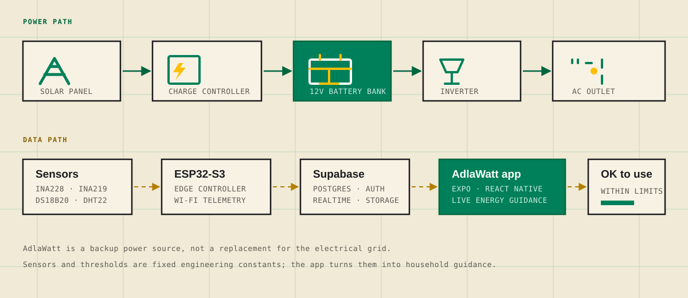

Make stored energy visible
See battery level, solar input, load, voltage, and temperature in one live view instead of guessing from a few indicator lights.
Off-grid solar · IoT · mobile
AdlaWatt pairs an ESP32-S3 energy monitor with an Expo mobile app, so households can see what their battery can safely power during an outage.
Academic capstone · Northern Bukidnon State College · Philippines
Why it exists
A backup battery is only useful when you know what it can carry. AdlaWatt makes stored solar energy visible, understandable, and easier to plan around.
Field notes · 01—03
See battery level, solar input, load, voltage, and temperature in one live view instead of guessing from a few indicator lights.
Appliance guidance compares remaining energy, battery voltage, and appliance power draw before you plug something in.
Historical charts and activity logs show what the system has done over time.
System flow
Power moves through the hardware. Data moves through the ESP32, Supabase, and the mobile app.
A solar panel charges the battery through a charge controller.
Two ZENOVA 30Ah batteries are connected in parallel for a 12 V, 60 Ah bank.
An inverter supplies the built-in AC outlet for compatible appliances.
An ESP32-S3 reads solar, load, voltage, and temperature sensors.
The app shows live status and labels appliances OK to use or not advisable.

Current status: the mobile app is integrated with Supabase; the ESP32 hardware feed is being wired up end to end.
What the app does
The app turns raw sensor readings into the information a household actually needs during an outage.
01 · Live data
Battery status, voltage, energy, current load, depth of discharge, solar input, solar voltage and current, temperatures, and device status.
02 · Guidance
Each appliance is labeled OK to use or not advisable based on remaining energy, voltage, and power draw.
03 · Weather
Current weather information for the system location, shown alongside the live energy readings.
04 · Alerts
Push notifications for critical battery, temperature, solar, load, and device-status alerts.
05 · Reports
Historical charts and reports for selected date ranges and frequencies.
06 · Activity
A history of system events, kept separate from notifications.
Appliance guidance
Pick the appliances you plan to use. AdlaWatt compares three inputs and gives a clear recommendation before the load is connected.
Illustrative logic
2 outcomesRecommendations depend on live readings. This card illustrates the decision model, not a live device state.
Hardware
A transportable power enclosure, a small sensor stack, and an ESP32-S3 that connects the physical system to the app.
Get the app
Using AdlaWatt requires an AdlaWatt account. Scan the QR code or open the download page, then sign in or create an account.
Install sequence
Direct APK · Google Drive
Project status
AdlaWatt is an academic capstone project in active development. The app covers monitoring, weather information, appliance recommendations, notifications, activity logs, and historical data. A web-based admin dashboard for researchers is planned, and the ESP32 hardware feed is the remaining integration work.
Follow the build on GitHubQuestions
The short answers to the questions people ask most about the system, the app, and the project.
06 questions · one system
AdlaWatt is an IoT-based transportable off-grid solar backup power system with an ESP32 monitor and a mobile app for real-time energy monitoring, appliance recommendations, notifications, and outage planning.
An ESP32-S3 reads voltage, current, and temperature sensors, sends the readings to Supabase, and the AdlaWatt mobile app displays live battery, solar, load, and system-health data.
AdlaWatt works with compatible household appliances up to 600 W total through its built-in AC outlet. High-power appliances such as air-conditioners, washing machines, and electric stoves are excluded. The app compares remaining energy, battery voltage, and appliance power draw to label each item OK to use or not advisable.
No. AdlaWatt is an academic capstone prototype in development and is not a commercial product.
The repository is publicly viewable, but no open-source license is specified. Reuse, redistribution, or modification requires permission from the authors.
AdlaWatt was developed by the AdlaWatt Research and Development Team at Northern Bukidnon State College in Bukidnon, Philippines. The prototype was evaluated in Sto. Niño, Manolo Fortich, Bukidnon.
Follow the build
The repository contains the Expo app, Supabase schema and migrations, ESP32 integration notes, hardware documentation, and the project’s user manual.